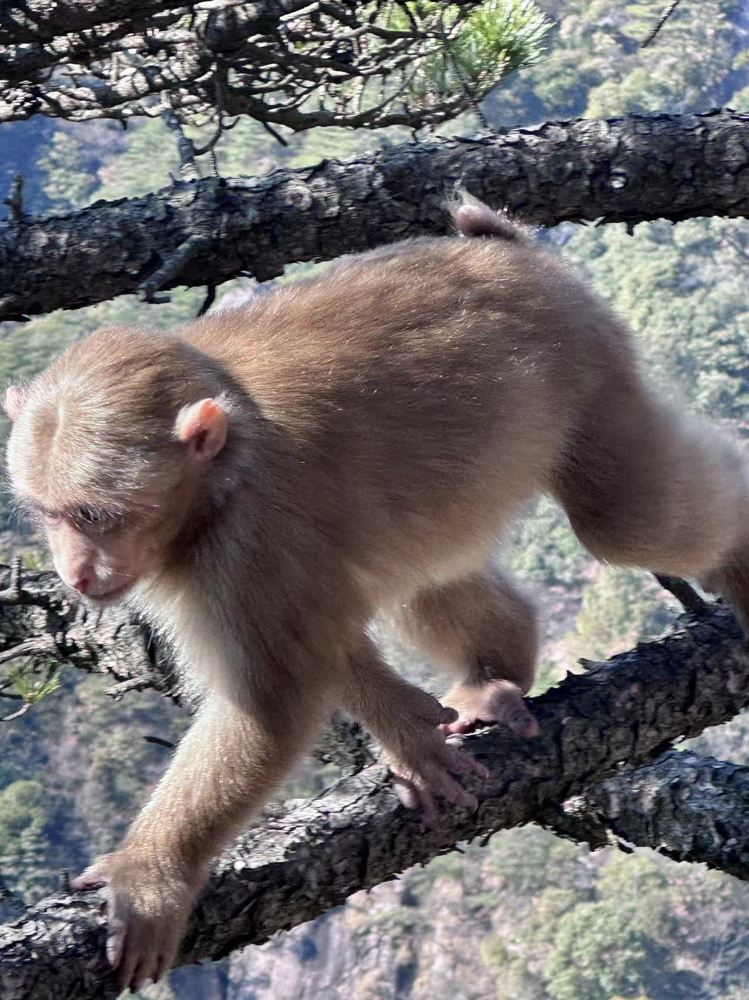
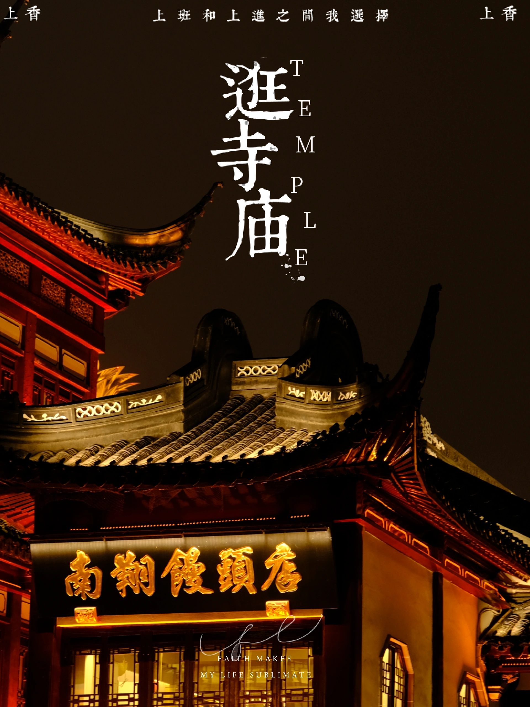

Events
Academic Activities
Not yet.
Proud experiences
I was awarded the National Scholarship by the Ministry of Education of China in 2023. Thanks to my Supervisor, Professor Xianwei Li, and the members of DSO group.
I was elected as the president of the Graduate Student Association of SEIEE College in 2022, SJTU. This experience has benefited me a lot.
Photography



